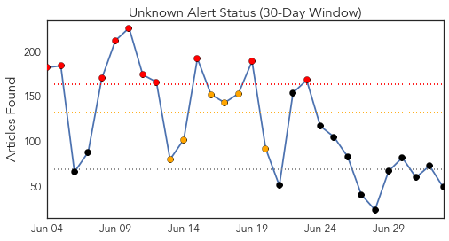
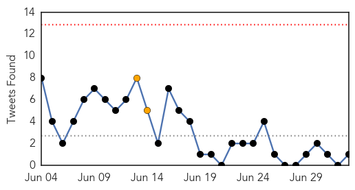
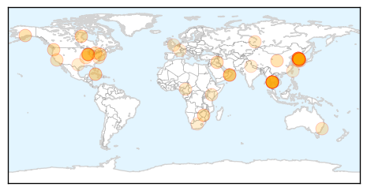

Measles
30-Day Web Trend
2 alerts, 0 warnings

30-Day Twitter Trend
1 alerts, 0 warnings

Article Locations

Article Confidences

Top Articles:
- 0.962
- Measles kills first patient in 12 years
- 0.958
- Measles Takes First American Life Since 2003 -- NYMag
- 0.957
- Measles killed a Washington woman
- 0.920
- Washington Woman Is First U.S. Measles Death in 12 Years
- 0.918
- Case for vaccination: First measles fatality in US in over a decade -
- 0.905
- Ebola vaccine trial…to be or not to be?
- 0.904
- First person to die of the measles in a dozens years
- 0.893
- Measles death in US is the first in 12 years
- 0.886
- Officials Confirm First U.S. Measles Death in 12 Years
- 0.857
- CORRECTED VERSION — UPDATE: Clallam County woman's death by measles is first in nation in 12 years and first in state since 1990 -- Port Angeles Port Townsend Sequim Forks Jefferson County Clallam Cou
- 0.814
- The US records its first measles death in 12 years
- 0.790
- A woman died in Washington
- 0.785
- Measles death in US: First fatality since 2003
- 0.776
- A woman dies of measles, and antivaccinationists think it’s a conspiracy – Respectful Insolence
- 0.761
- US Confirms First Measles Death In Over a Decade
- 0.751
- Washington Woman's Demise Is First In U.S. Since 2003
- 0.722
- Woman's death by measles is first in U.S. since 2003
- 0.722
- KinderCare requiring measles shots for infants’ caregivers
- 0.681
- Washington State Woman First To Die Of Measles In 25 Years
- 0.637
- Measles leads to 1st U.S. death in 12 years - Xinhua
- 0.630
- Fiji Times Online
- 0.621
- The first U.S. measles death since 2003
- 0.612
- Declining vaccine rates: Mostly a white problem
Top Tweets:
-
No tweets found for Jul 03, 2015
Unknown
30-Day Web Trend
10 alerts, 6 warnings

30-Day Twitter Trend
0 alerts, 2 warnings

Article Locations
Article Confidences
Top Articles:
- 0.996
- Hospital releases Omani man after full recovery from MERS
- 0.995
- Thailand hospital discharges first and only Mers case after he's declared free of virus, SE Asia News & Top Stories
- 0.995
- Ministry reports new MERS case-INSIDE Korea JoongAng Daily
- 0.994
- Thailand's first MERS case to leave hospital, news, Health News, AsiaOne YourHealth
- 0.994
- Thailand's first MERS case to leave hospital
- 0.993
- Thailand's first MERS case to leave hospital
- 0.992
- Thailand's first MERS case to leave hospital
- 0.991
- Thailand's only disease case set to leave hospital
- 0.990
- Omani to fly home after declared free of MERS virus
- 0.989
- Nurse infected with MERS virus in South Korea
- 0.989
- Nurse infected with MERS virus in South Korea
- 0.988
- Thailand's First MERS Case To Leave Hospital
- 0.984
- MERS patients at Samsung Medical moved
- 0.975
- Winter diarrhoea in children
- 0.966
- Lacey motel linked to outbreak of Legionnaires’ disease agrees to close temporarily
- 0.961
- (MERS virus) Health chief casts wary eye at Korea infections
- 0.957
- Washington motel closes after possible Legionnaires' report
- 0.955
- South Korea to waive visa application fee for RI travelers
- 0.948
- Kid dies of AES, five more in hospital
- 0.938
- Hong Kong considers extending health watch on South Korea as new Mers infections confirmed
- 0.924
- Juneau Empire - Alaska's Capital City Online Newspaper
- 0.917
- Chicago Tribune
- 0.917
- Chicago Tribune
- 0.917
- Chicago Tribune
- 0.917
- Chicago Tribune
- 0.917
- Chicago Tribune
- 0.917
- Chicago Tribune
- 0.910
- The world windows to Thailand
- 0.870
- Tick testing increases
- 0.839
- Thailand's first MERS patient cured
- 0.821
- Thailand's first MERS patient cured - Xinhua
- 0.804
- California Woman Catches Fatal Brain Eating Bug After Swim
- 0.801
- Call in for MERS inquiries-INSIDE Korea JoongAng Daily
- 0.770
- Lyme Disease always a summer threat
- 0.728
- Bad belly: food poisoning or tummy bug?
- 0.702
- AIDS: Is there an epidemic in Russia?
- 0.698
- Cuba Eliminates Transmission of HIV and Syphilis from Mother to Child, WHO Says Growing Your Baby
- 0.672
- Dead bat found at Cedar Heights Junior High
- 0.661
- More specialist doctors needed
- 0.661
- An Unwelcome Gift from Gorillas – Pamela K. Bond
- 0.629
- Blacklegged ticks examined as Canada experiences increase in Lyme disease cases
- 0.576
- Cuba first to stop mother-to-child transmission of HIV
- 0.570
- Chronic Wasting Disease Detected in Texas Captive Deer
- 0.570
- Chronic Wasting Disease Detected in Medina County Captive Deer
- 0.564
- S Korea to inject $10bn into economy after Mers outbreak
- 0.559
- Africa needs a health policy to help people with albinism
- 0.554
- Hospitals treating burn ...｜Society｜WCT
- 0.548
- J P Nadda Urges States To Focus On Innovations To Achieve Superior Health Outcomes
- 0.521
- UN MINISTRE LUXEMBOURGEOIS EN VISITE AU CESE POUR LE LANCEMENT DE LA PRÉSIDENCE DE SON PAYS
- 0.514
- Burst water main: Repairs under way but service still disrupted
Showing top 50 articles...
Top Tweets:
- 0.598
- RT: Si el pulpo se acerca a la hembra no estando lista para la cópula, ella le arranca de un mordisco uno de los ocho penes y …